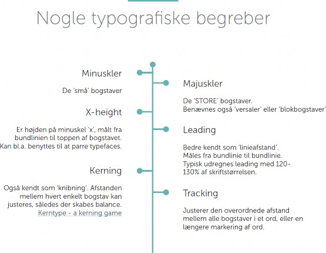

TYPOGRAFI
Typografi er et stort og omfattende emne med mange ”regler”.
Det er dog essentielt for alle som arbejder med visuel kommunikation.
Der er nogle grundlæggende typografiske spilleregler, som man bør vide når man arbejder med design.
Note til mig selv: Komplet guide til typografi
https://medium.springboard.com/the-guide-to-getting-typography-right-in-digital- design-bb61214ff3ad

Sine Kruse Nyrup MMD, 2020